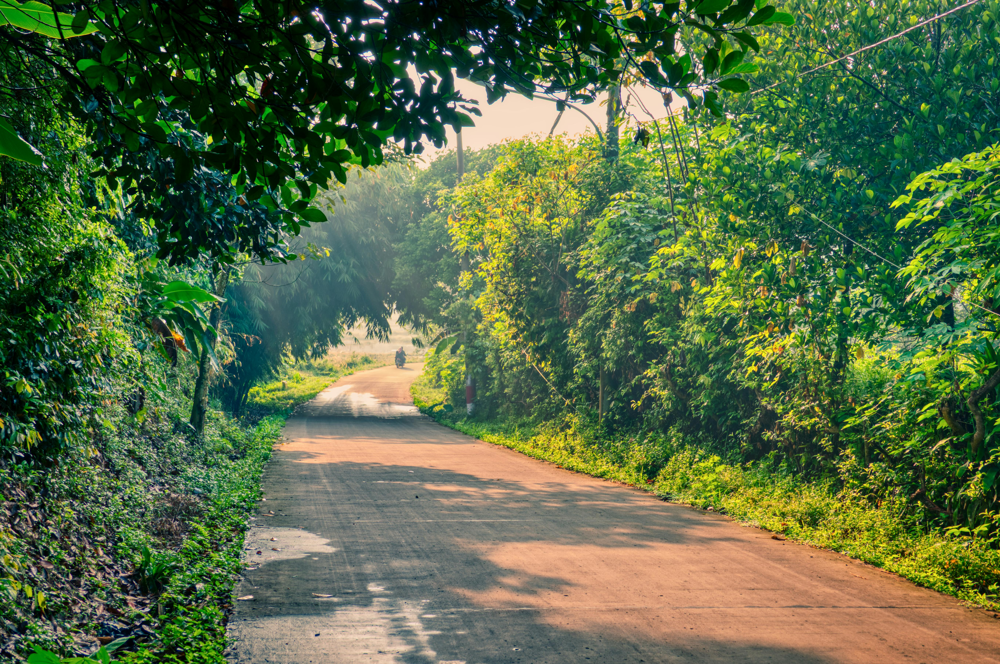
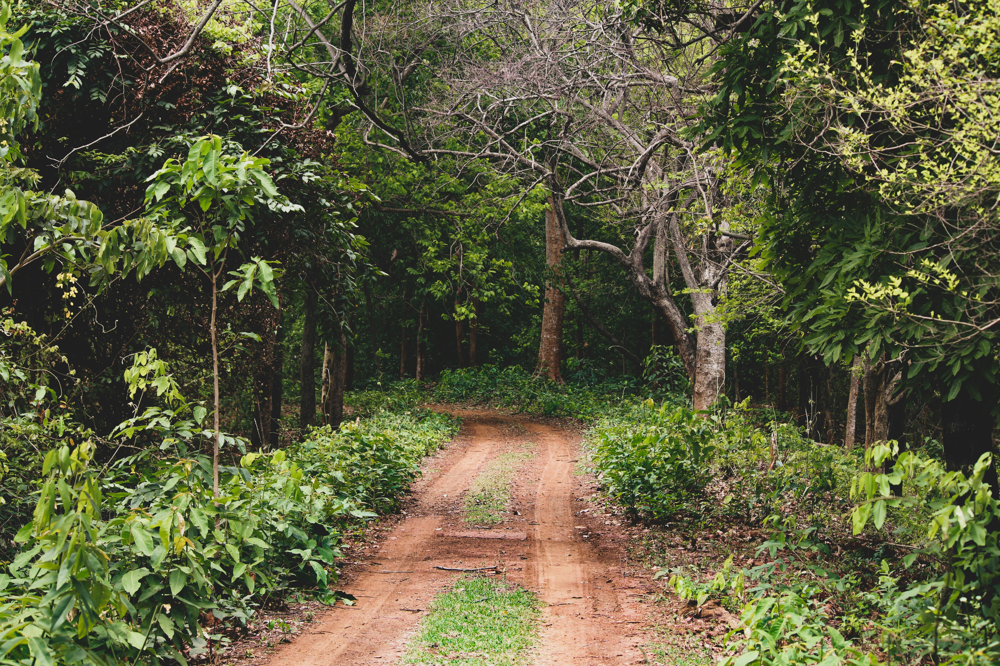
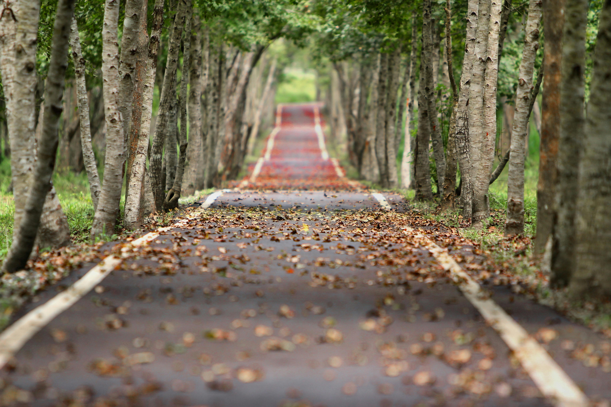

My Trip to Munnar
I visited Munnar, a beautiful hill station in Kerala known for its greenery, winding roads, and peaceful atmosphere. The journey itself was as beautiful as the destination.
Day 1 – Journey
The road to Munnar was surrounded by dense trees and scenic curves. The fresh air and greenery made the journey memorable.

Day 2 – Exploring Nature
Walking through forest paths and experiencing nature up close was peaceful and refreshing.

Highlights
The calm environment, tree-lined paths, and quiet surroundings made this trip unforgettable.

Nature Sounds
Ambient sounds similar to what I experienced during the trip: